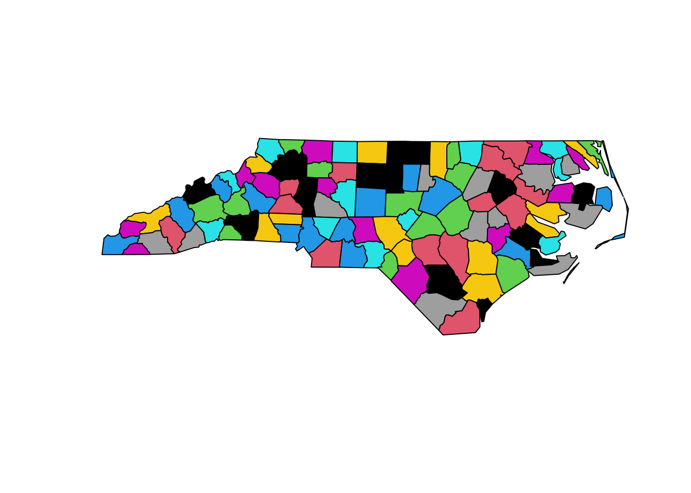
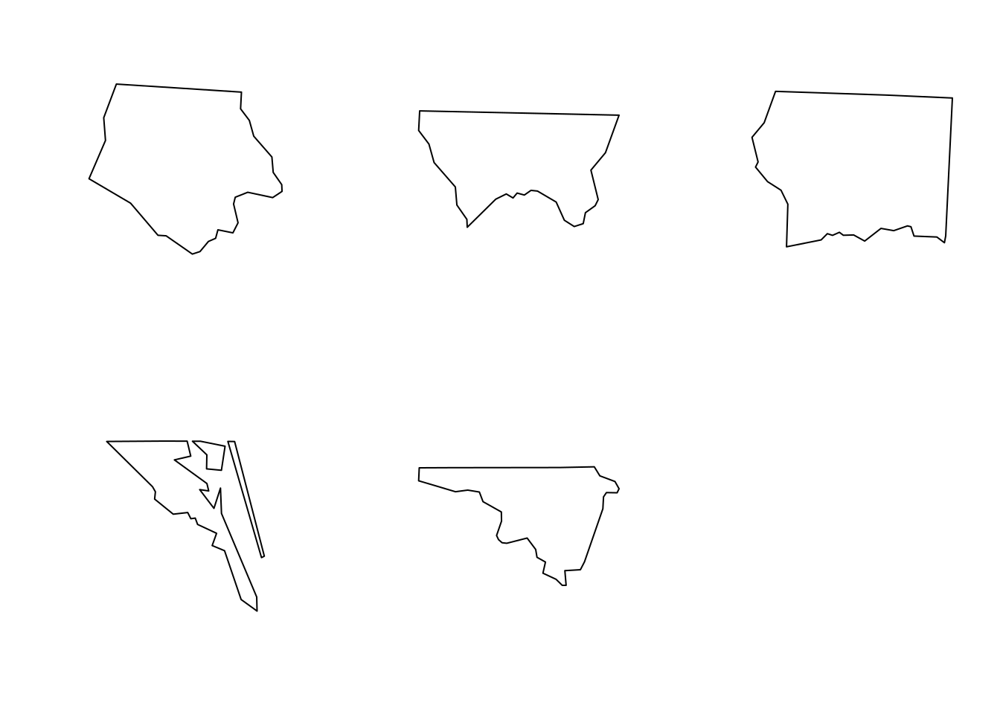
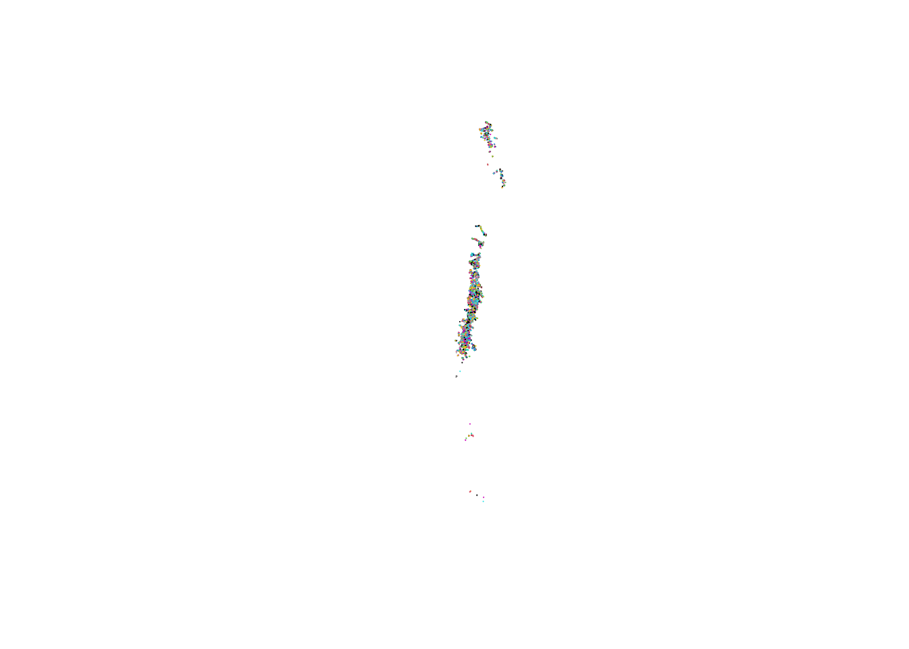
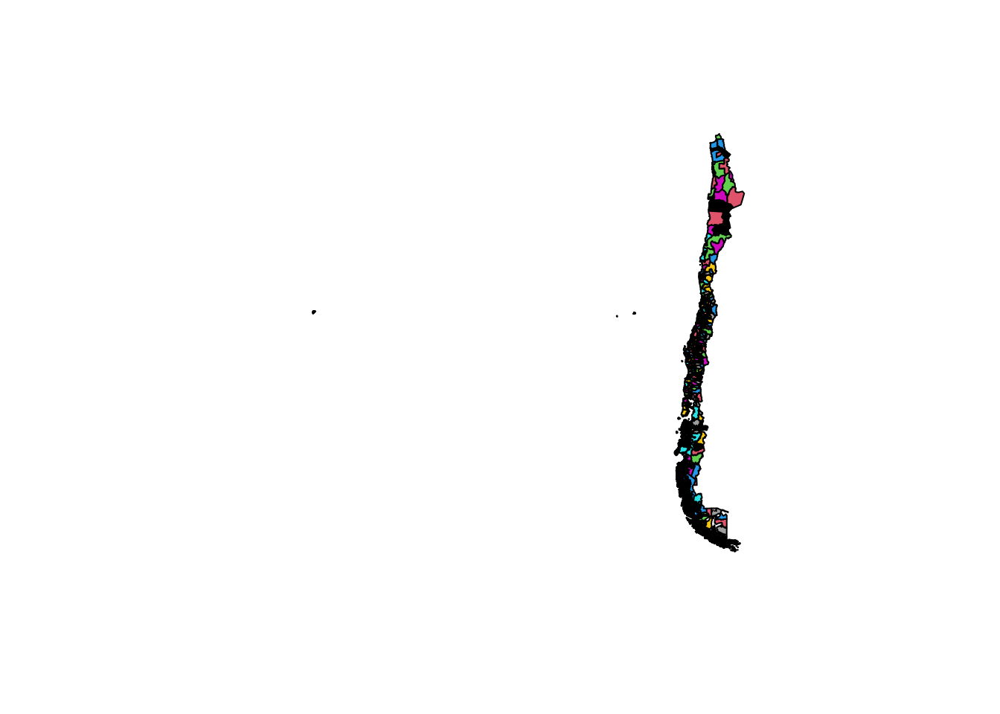
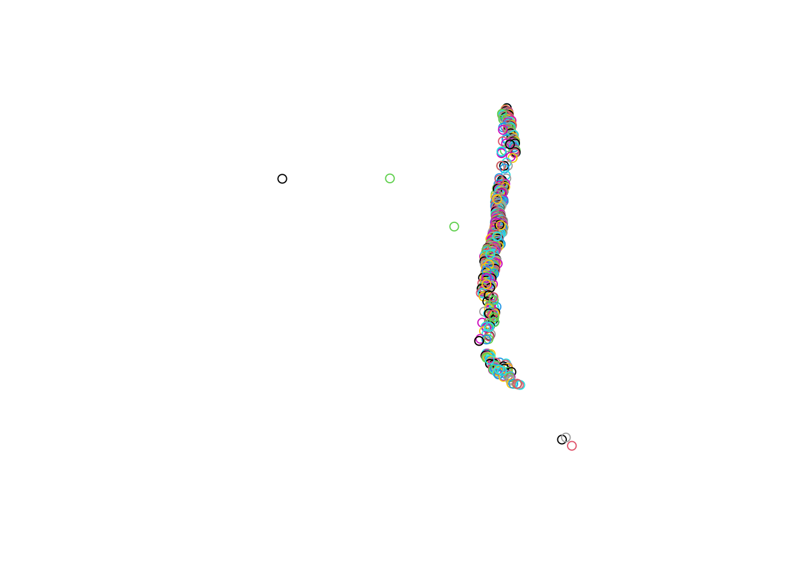
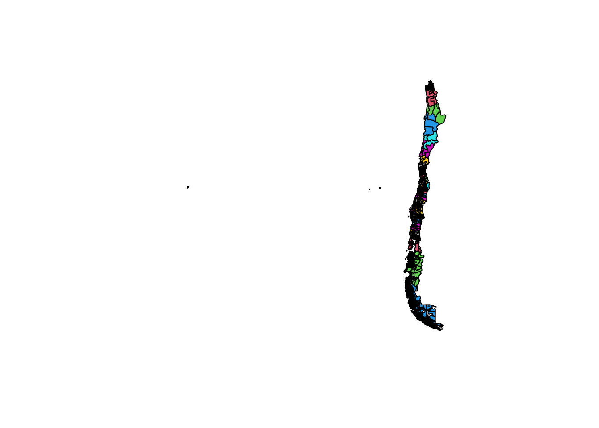
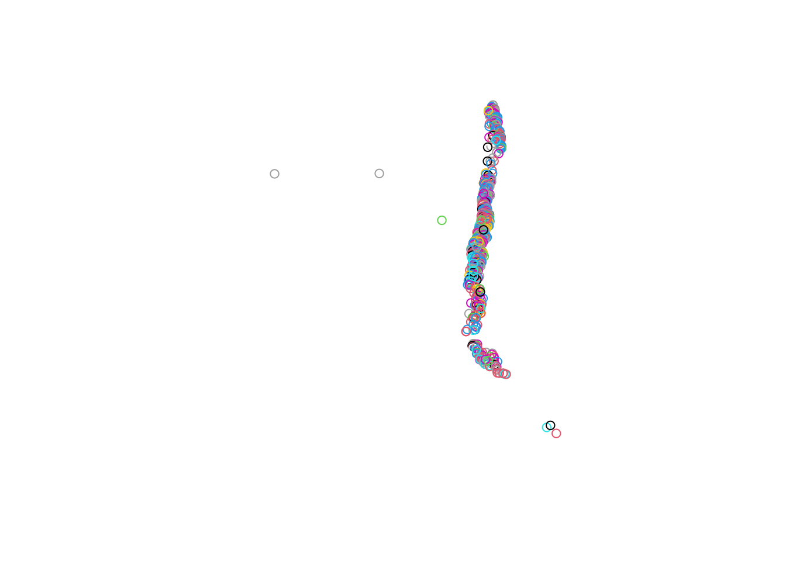
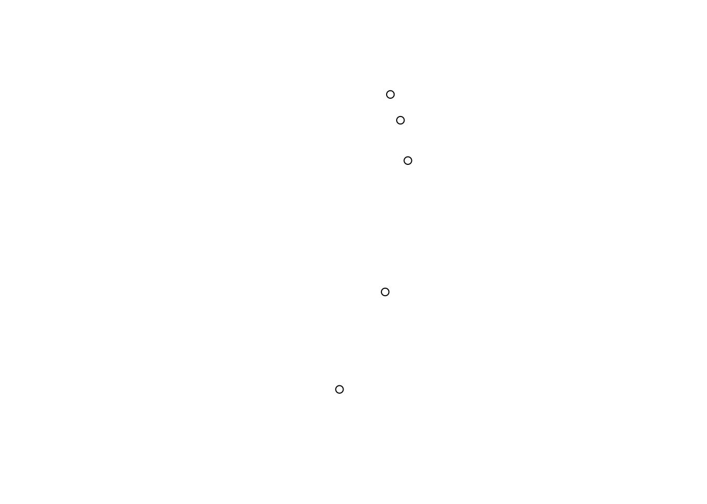
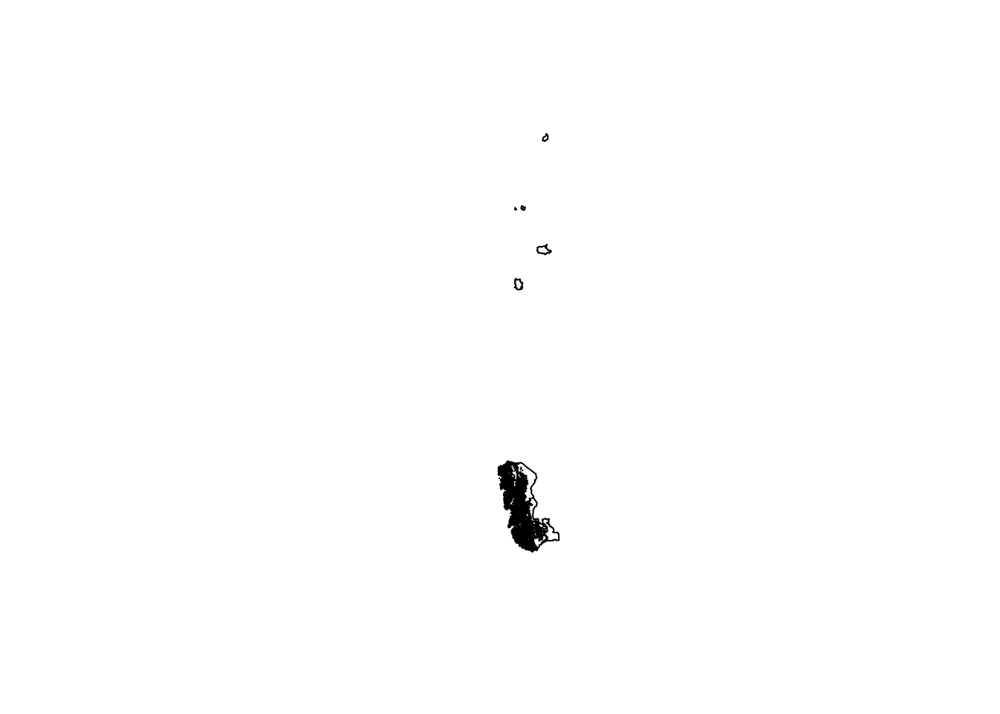

# instala los paquetes
install.packages(c('sf','terra'))
# carga los paqutes en el entorno de R y permite utilizar
# las funciones adicionales que contienen
library(sf)
library(terra)Taller 3 (IMSE1017)
Datos vectoriales con {sf}
Descripción
En las primeras clases de la asignatura se ha empezado a trabajar con el software R, partiendo por conocer la sintaxis, la IDE RStudio, las estructuras y tipos de datos. En el primer taller trabajó con datos que vienen incluidos en los paquetes base de R como mtcars, aplicando funciones que permitan identificar los tipos de objetos y su estructura, además de realizar proceso de indexación para diferentes tipos de objetos (ej, data.frame, matrix, listas). En el segundo taller, trabajo con datos climáticos en donde tuvo que importar los datos, realizar diferentes tipos de indexaciones, algunas operaciones matemáticas, y exportar los datos a un archivo.
Objetivo del taller
Trabajar con datos vectoriales y raster en R con los paquetes {sf} y {terra}
Paquetes R
Hasta el momento hemos trabajado con los paquetes que vienen inculidos en R base. Ahora empezaremos a trabajar con paquetes adicionales que no vienen instalados por defecto en R, por lo que deberá instalarlos. Los paquetes con los que trabajaremos con {sf} y {terra}, los que permiten trabajar con datos espaciales vectoriales y rasters.
Para instalar los paquetes debe realizar lo siguiente:
Data
En el campus virtual, en la sección Actividades -> Talleres -> Taller3 se encuentran archivos de tipo vectorial y raster con los que se trabajará.
¿Qué debe entregar?
Debeŕa utilizar RStudio para crear un script, en donde resolverá cada uno de los ejercicios. Debe utilizar los comentarios (#) para hacer una descripción del ejercicio e incorporar cualquier información que ayude a entender lo realizado. A modo de ejemplo:
# Ejercicio 1:
# comentario explicando lo que se hace
{
Aca va el script que resuelve el ejericio 1
}Debe guardar el script con el nombre taller3_grupo_{número_grupo}.R. Los archivos los debe subir en el campus virtual en la sección Actividades -> Talleres -> Taller3
Fecha de entrega
Viernes 21 de octubre hasta las 8:00am
Ejercicios
Ejercicio 1 (10pts)
Cree un objeto sfg de tipo punto de dos, tres y cuatro dimensiones. Utilicé las coordenadas de latitud -36.25 y longitud -72.65 una elevación de 200 metros y una direccción de 90°. Revise la estructura del objeto creado utilizando la función str
library(sf)Linking to GEOS 3.10.2, GDAL 3.4.1, PROJ 8.2.1; sf_use_s2() is TRUEst_point(c(-36.25,-72.65,200,90))POINT ZM (-36.25 -72.65 200 90)Ejercicio 2 (30 pts)
set.seed(123)
df <- data.frame(longitud = runif(10,-74,-70),latitud = runif(10,-50,-14))
df longitud latitud
1 -72.84969 -15.55400
2 -70.84678 -33.67997
3 -72.36409 -25.60746
4 -70.46793 -29.38520
5 -70.23813 -46.29471
6 -73.81777 -17.60630
7 -71.88758 -41.14084
8 -70.43032 -48.48586
9 -71.79426 -38.19485
10 -72.17354 -15.63787Utilice las coordenadas anteriores para crear los siguientes tipos de objetos sfg:
- MULTIPOINT
- LINESTRING
- MULTILINESTRING
- POLYGON
- MULTIPOLYGON
- GEOMETRY COLLECTION
# transforma data.frame en matrix
dfm <- as.matrix(df)
# multipoint
mpt <- st_multipoint(dfm)
# linestring
ls <- st_linestring(dfm)
# multilinestring
mls <- st_multilinestring(
list(dfm[1:5,]),dfm[6:10,])
# polygon
p <- st_polygon(
list(
rbind(dfm,dfm[1,]))
)
# multipolygon
mp <- st_multipolygon(
list(
list(
rbind(dfm[1:5,],dfm[1,])),
list(
rbind(dfm[6:10,],dfm[6,])
)
)
)
# geometry collection
gc <- st_geometrycollection(list(mpt,ls,mls,p,mp))Ejercicio 3 (30pts)
Utilice las función st_sfc para convertir los objetos sfg en tipo sfc, luego utilice la función st_sf para crear un objeto sf.
mpt_sfc <- st_sfc(mpt)
ls_sfc <- st_sfc(ls)
mls_sfc <- st_sfc(mls)
p_sfc <- st_sfc(p)
mp_sfc <- st_sfc(mp)
gc_sfc <- st_sfc(gc)
st_sf(c(mpt_sfc,ls_sfc,mls_sfc,p_sfc,mp_sfc,gc_sfc))Simple feature collection with 6 features and 0 fields
Geometry type: GEOMETRY
Dimension: XY
Bounding box: xmin: -73.81777 ymin: -48.48586 xmax: -70.23813 ymax: -15.554
CRS: NA
c.mpt_sfc..ls_sfc..mls_sfc..p_sfc..mp_sfc..gc_sfc.
1 MULTIPOINT ((-72.84969 -15....
2 LINESTRING (-72.84969 -15.5...
3 MULTILINESTRING ((-72.84969...
4 POLYGON ((-72.84969 -15.554...
5 MULTIPOLYGON (((-72.84969 -...
6 GEOMETRYCOLLECTION (MULTIPO...Ejercicio 4 (40pts)
Con las coordenadas del ejercicio 2 cree un objeto de tipo punto sfg para cada fila. Convierta todos los puntos en un objeto sfc y luego en un sf. Agregue una columna como atributo con los nombres “Pocoyan”, “Pichasca”, “Chiguayante”, “Paillaco”, “Canela”, “Estación Experimental Austral”, “Recoleta”, “El Romeral”, “San Jorge Los Niches” y “Catemu”.
data_sf <- st_as_sf(df,coords = c('longitud','latitud'),crs = 4326)
data_sf$nombre <- c("Pocoyan", "Pichasca", "Chiguayante", "Paillaco", "Canela", "Estación Experimental Austral", "Recoleta", "El Romeral", "San Jorge Los Niches","Catemu")
data_sfSimple feature collection with 10 features and 1 field
Geometry type: POINT
Dimension: XY
Bounding box: xmin: -73.81777 ymin: -48.48586 xmax: -70.23813 ymax: -15.554
Geodetic CRS: WGS 84
geometry nombre
1 POINT (-72.84969 -15.554) Pocoyan
2 POINT (-70.84678 -33.67997) Pichasca
3 POINT (-72.36409 -25.60746) Chiguayante
4 POINT (-70.46793 -29.3852) Paillaco
5 POINT (-70.23813 -46.29471) Canela
6 POINT (-73.81777 -17.6063) Estación Experimental Austral
7 POINT (-71.88758 -41.14084) Recoleta
8 POINT (-70.43032 -48.48586) El Romeral
9 POINT (-71.79426 -38.19485) San Jorge Los Niches
10 POINT (-72.17354 -15.63787) CatemuEjercicio 5 (40 pts)
Cargue la el set de datos de ejemplo de Carolina del Norte que viene como archivo de tipo vectorial (nc) incluido con el paquete {sf}. Realice lo siguiente:
- Indique el Sistema de Referencia de Coordenadas
- Indique el tipo de geometria que tiene almacenada
- Extraiga la list-colum correspondiente a las geometrias
- Extraiga el data.frame (sin la geometria)
- Cuantas columnas tiene la tabla de atributos
- Cuántas entidades espaciales tiene la capa vectorial.
- Cree un mapa en el que se pueda apreciar la variación respecto a la columnas ‘NAME’
- Extraiga cinco entidades espaciales y haga un mapa de cada una
# ruta donde está almacenado el archvio
archivo <- system.file("shape/nc.shp", package="sf")
# cargar en archvio y asignarlo al objeto nc en R
nc <- st_read(archivo)Reading layer `nc' from data source
`/home/francisco/R/x86_64-pc-linux-gnu-library/4.2/sf/shape/nc.shp'
using driver `ESRI Shapefile'
Simple feature collection with 100 features and 14 fields
Geometry type: MULTIPOLYGON
Dimension: XY
Bounding box: xmin: -84.32385 ymin: 33.88199 xmax: -75.45698 ymax: 36.58965
Geodetic CRS: NAD27#Sistema de referencia de coordenadas
st_crs(nc)Coordinate Reference System:
User input: NAD27
wkt:
GEOGCRS["NAD27",
DATUM["North American Datum 1927",
ELLIPSOID["Clarke 1866",6378206.4,294.978698213898,
LENGTHUNIT["metre",1]]],
PRIMEM["Greenwich",0,
ANGLEUNIT["degree",0.0174532925199433]],
CS[ellipsoidal,2],
AXIS["latitude",north,
ORDER[1],
ANGLEUNIT["degree",0.0174532925199433]],
AXIS["longitude",east,
ORDER[2],
ANGLEUNIT["degree",0.0174532925199433]],
ID["EPSG",4267]]# tipo de geometria
# la list-column(sfc) contiene 100 multipoligonos
st_geometry(nc)Geometry set for 100 features
Geometry type: MULTIPOLYGON
Dimension: XY
Bounding box: xmin: -84.32385 ymin: 33.88199 xmax: -75.45698 ymax: 36.58965
Geodetic CRS: NAD27
First 5 geometries:MULTIPOLYGON (((-81.47276 36.23436, -81.54084 3...MULTIPOLYGON (((-81.23989 36.36536, -81.24069 3...MULTIPOLYGON (((-80.45634 36.24256, -80.47639 3...MULTIPOLYGON (((-76.00897 36.3196, -76.01735 36...MULTIPOLYGON (((-77.21767 36.24098, -77.23461 3...#extraer el data.frame sin la geometría
df <- st_drop_geometry(nc)
#columnas en la tabla de atributos
ncol(df)[1] 14#entidades espaciales
nrow(df)[1] 100#mapa con variación con respecto a NAME
plot(nc$geometry, col = as.factor(nc$NAME))
# mapa de cinco entidades espaciales
par(mfrow=c(2,3))
plot(nc$geometry[1])
plot(nc$geometry[2])
plot(nc$geometry[3])
plot(nc$geometry[4])
plot(nc$geometry[5])
Ejercicio 6 (100 pts)
Cargue los set de datos vectoriales que se encuentran en el campus virtual: division_comunal, estaciones_chile y canales nacional. Realice lo siguiente:
- Indique el Sistema de Referencia de Coordenadas
- Indique el tipo de geometria que tiene almacenada
- Extraiga la list-colum correspondiente a las geometrias
- Extraiga el data.frame (sin la geometria) - Cuantas columnas tiene la tabla de atributos
- Cuántas entidades espaciales tiene la capa vectorial.
- Cree un mapa en el que se pueda apreciar la variación respecto a una columna categórica y numérica.
- Extraiga cinco entidades espaciales y haga un mapa de cada una
- Indique el codigo EPSG de cada una de las capas vectoriales (canales, estaciones, comunas)
- Transforme el sistema de referencia de coordenadas de las tres capas vectoriales a datum WGS84 coordenadas geográficas.
#cargar las capas vectoriales
canales <- read_sf('../data/canales_nacional_final/canales_nacional_final.shp')
estaciones <- read_sf('../data/estaciones_chile/estaciones_chile.shp')
comunas <- read_sf('../data/division_comunal/division_comunal.shp')
# sistema de referencias de coordenadas
st_crs(canales)Coordinate Reference System:
User input: WGS 84 / UTM zone 19S
wkt:
PROJCRS["WGS 84 / UTM zone 19S",
BASEGEOGCRS["WGS 84",
DATUM["World Geodetic System 1984",
ELLIPSOID["WGS 84",6378137,298.257223563,
LENGTHUNIT["metre",1]]],
PRIMEM["Greenwich",0,
ANGLEUNIT["degree",0.0174532925199433]],
ID["EPSG",4326]],
CONVERSION["UTM zone 19S",
METHOD["Transverse Mercator",
ID["EPSG",9807]],
PARAMETER["Latitude of natural origin",0,
ANGLEUNIT["Degree",0.0174532925199433],
ID["EPSG",8801]],
PARAMETER["Longitude of natural origin",-69,
ANGLEUNIT["Degree",0.0174532925199433],
ID["EPSG",8802]],
PARAMETER["Scale factor at natural origin",0.9996,
SCALEUNIT["unity",1],
ID["EPSG",8805]],
PARAMETER["False easting",500000,
LENGTHUNIT["metre",1],
ID["EPSG",8806]],
PARAMETER["False northing",10000000,
LENGTHUNIT["metre",1],
ID["EPSG",8807]]],
CS[Cartesian,2],
AXIS["(E)",east,
ORDER[1],
LENGTHUNIT["metre",1]],
AXIS["(N)",north,
ORDER[2],
LENGTHUNIT["metre",1]],
ID["EPSG",32719]]st_crs(estaciones)Coordinate Reference System:
User input: WGS 84
wkt:
GEOGCRS["WGS 84",
DATUM["World Geodetic System 1984",
ELLIPSOID["WGS 84",6378137,298.257223563,
LENGTHUNIT["metre",1]]],
PRIMEM["Greenwich",0,
ANGLEUNIT["degree",0.0174532925199433]],
CS[ellipsoidal,2],
AXIS["latitude",north,
ORDER[1],
ANGLEUNIT["degree",0.0174532925199433]],
AXIS["longitude",east,
ORDER[2],
ANGLEUNIT["degree",0.0174532925199433]],
ID["EPSG",4326]]st_crs(comunas)Coordinate Reference System:
User input: WGS 84 / UTM zone 19S
wkt:
PROJCRS["WGS 84 / UTM zone 19S",
BASEGEOGCRS["WGS 84",
DATUM["World Geodetic System 1984",
ELLIPSOID["WGS 84",6378137,298.257223563,
LENGTHUNIT["metre",1]]],
PRIMEM["Greenwich",0,
ANGLEUNIT["degree",0.0174532925199433]],
ID["EPSG",4326]],
CONVERSION["UTM zone 19S",
METHOD["Transverse Mercator",
ID["EPSG",9807]],
PARAMETER["Latitude of natural origin",0,
ANGLEUNIT["Degree",0.0174532925199433],
ID["EPSG",8801]],
PARAMETER["Longitude of natural origin",-69,
ANGLEUNIT["Degree",0.0174532925199433],
ID["EPSG",8802]],
PARAMETER["Scale factor at natural origin",0.9996,
SCALEUNIT["unity",1],
ID["EPSG",8805]],
PARAMETER["False easting",500000,
LENGTHUNIT["metre",1],
ID["EPSG",8806]],
PARAMETER["False northing",10000000,
LENGTHUNIT["metre",1],
ID["EPSG",8807]]],
CS[Cartesian,2],
AXIS["(E)",east,
ORDER[1],
LENGTHUNIT["metre",1]],
AXIS["(N)",north,
ORDER[2],
LENGTHUNIT["metre",1]],
ID["EPSG",32719]]#tipo de geometria
unique(st_geometry_type(canales))[1] MULTILINESTRING
18 Levels: GEOMETRY POINT LINESTRING POLYGON MULTIPOINT ... TRIANGLEunique(st_geometry_type(estaciones))[1] MULTIPOINT
18 Levels: GEOMETRY POINT LINESTRING POLYGON MULTIPOINT ... TRIANGLEunique(st_geometry_type(comunas))[1] MULTIPOLYGON
18 Levels: GEOMETRY POINT LINESTRING POLYGON MULTIPOINT ... TRIANGLE# extraiga el data.frame
df_canales <- st_drop_geometry(canales)
df_estaciones <- st_drop_geometry(estaciones)
df_comunas <- st_drop_geometry(comunas)
#columnas de la tabla de atributos
ncol(df_canales)[1] 19ncol(df_estaciones)[1] 11ncol(df_comunas)[1] 6#entidades espaciales
nrow(df_canales)[1] 12233nrow(df_estaciones)[1] 1196nrow(df_comunas)[1] 346#otra forma
length(st_geometry(canales))[1] 12233length(st_geometry(estaciones))[1] 1196length(st_geometry(comunas))[1] 346#mapa variación variable categorica
plot(canales$geometry,col = as.factor(canales$nomcan))
plot(comunas$geometry,col = as.factor(comunas$NOM_COM))
plot(estaciones$geometry,col = as.factor(estaciones$estacion))
#mapa variación variable continua
plot(comunas$geometry,col = comunas$DIS_ELEC)
plot(estaciones$geometry,col = estaciones$altitud)
#mapa de cinco entidades espaciales
s <- sample(nrow(canales),5)
plot(st_geometry(canales)[s])s <- sample(nrow(estaciones),5)
plot(st_geometry(estaciones)[s])
s <- sample(nrow(comunas),5)
plot(st_geometry(comunas)[s])
# codigo epsg de
st_crs(estaciones)$epsg[1] 4326st_crs(canales)$epsg[1] 32719st_crs(comunas)$epsg[1] 32719# transforma SRC a EPSG:4326
canales <- st_transform(canales,4326)
comunas <- st_transform(comunas,4326)